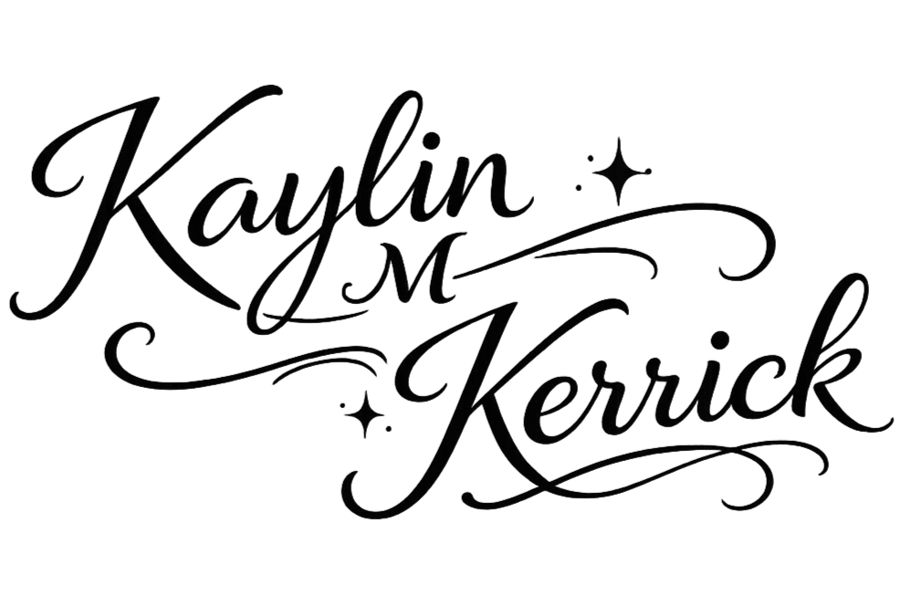

A Computer Science & Engineering student passionate about building creative and impactful technology.
Explore
About
About Me
Learn more about my academic background and campus involvement.
Learn more →
Software Design
Projects
Explore my software engineering projects.
View projects →
3D Computer Animation
Berry Beats Film
Watch my first 3D animated short film and the development process.
Watch →
OSU Study Abroad Program
Around the World with Disney Imagineering
A behind-the-scenes look at Disney's creative process through meetings with Imagineers, a team attraction pitch, and an interactive queue design portfolio.
Explore →